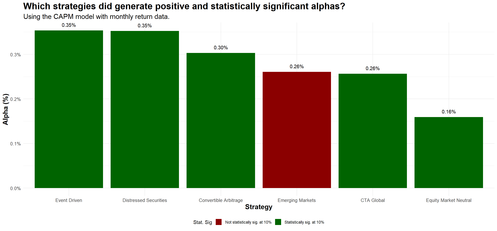
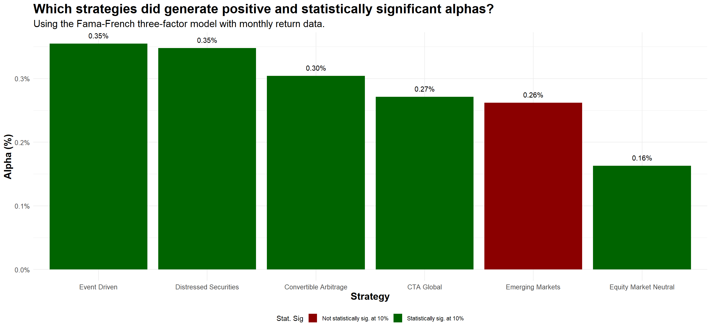
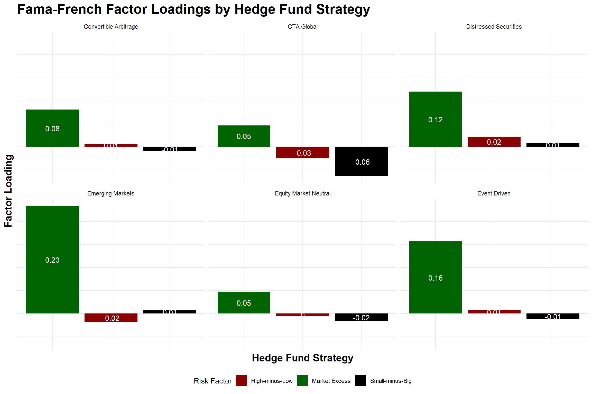

Fama French and Multi-Factor Models of Risk
Outline
- This lecture is mainly based the following textbooks:
- Tidy Finance (Scheuch, Voigt, and Weiss 2023)
- R for Data Science (Wickham, Mine Cetinkaya-Rundel, and Grolemund 2023)
Coding Replications
For coding replications, whenever applicable, please follow this page or hover on the specific slides with containing coding chunks.
- Ensure that you have your session properly set-up according to the instructions outlined in the course webpage
- In the webpage, you can also find a detailed discussion of the examples covered in this lecture
Disclaimer
Disclaimer
The information presented in this lecture is for educational and informational purposes only and should not be construed as investment advice. Nothing discussed constitutes a recommendation to buy, sell, or hold any financial instrument or security. Investment decisions should be made based on individual research and consultation with a qualified financial professional. The presenter assumes no responsibility for any financial decisions made based on this content.
All code used in this lecture is publicly available and is also shared on my GitHub page. Participants are encouraged to review, modify, and use the code for their own learning and research purposes. However, no guarantees are made regarding the accuracy, completeness, or suitability of the code for any specific application.
For any questions or concerns, please feel free to reach out via email at lucas.macoris@fgv.br
What if \(\alpha\) is consistently different from zero?
- Let’s go back to our \(\alpha\) definition for a given stock \(i\):
\[ \alpha_i = E[R_i] - R_i \]
As we discussed, if you assume that CAPM is the correct model to explain expected returns, competition in financial markets should make \(\alpha \rightarrow 0\) in equilibrium:
- Stocks above the SML are cheap, so the prices should rise (positive alpha).
- Stocks below the SML are expensive, so the prices should drop (negative alpha).
However, over the years since the discovery of the CAPM, it has become increasingly clear that forming portfolios based on market capitalization, book-to-market ratios, and past returns, investors can construct trading strategies that have a \(\small alpha>0\)
Why? There can be two reasons why positive-alpha strategies exist in a persistent way
Why \(\alpha\) is consistently different from zero?
Reason #1: Investors are systematically ignoring positive-NPV investment opportunities:
- The CAPM correctly computes required risk premiums, but investors are ignoring opportunities to earn extra returns without bearing any extra risk
- That could happen either because they are unaware of them or because the costs to implement the strategies are larger than the NPV of undertaking them
\(\rightarrow\) This explanation goes straight to the hypotheses outlined by the CAPM!
The only way a positive-NPV opportunity can persist in a market is if some barrier to entry restricts competition. Nowadays, this hypothesis seems unlikely:
- Information required to form the portfolios is readily available;
- Trading costs are decreasing
Why \(\alpha\) is consistently different from zero? Continued
Reason #2: The positive-alpha trading strategies contain risk that investors are unwilling to bear but the CAPM does not capture:
A stock’s beta with the market portfolio does not adequately measure a stock’s systematic risk
Because of that, the CAPM does not correctly compute the risk premium as it leaves out important risk factors that investors care about other than the market sensitivity!
- In other words, the positive alphas from the trading strategy are really returns for bearing risk that investors are averse to but the model does not capture:
We assumed that investor would always seek for the best risk \(\times\) return combination
However, investors may stick with inefficient portfolios because they care about risk characteristics other than the volatility of their traded portfolio. For instance, they prefer to not be exposed to the sector they work in or to specific industries (i.e., ESG-based decisions)
Moving Beyond the CAPM
- We previously defined that the required return for any given security \(i\) should follow:
\[ E[R_i] = R_f + \beta_i^P \times (E[R_P - R_f]) \]
- At first, we were agnostic on what \(P\), the portfolio returns, should stand for
- When we introduced the CAPM, we claimed that \(P=M\) - i.e, the efficient portfolio is the market portfolio
However, real-world frictions points us to an uncomfortable outcome:
- The CAPM assumes a single risk factor (market risk), but…
- There is empirical evidence that shows additional factors can explain anomalies
\(\rightarrow\) When the market portfolio is not efficient, we have to find a method to identify an efficient portfolio before we can use the above equation!
Size Effect
Idea: small market capitalization stocks have historically earned higher average returns than the market portfolio, even after accounting for their higher betas
A way to replicate this thesis is to split stocks each year into 10 portfolios by ranking them based on their market capitalizations:
- The first portfolio had the 10% smallest stocks in terms of market capitalization
- The second portfolio had the 20% smallest stocks; and so on, until…
- The tenth portfolio had the 10% biggest stocks in terms of market capitalization
Calculating the monthly excess returns and the beta of each decile portfolio, we see that:
- Portfolios with higher betas yield higher future returns (as expected)
- Most portfolios were above the security market (\(\small \alpha>0\))
- The smallest deciles - i.e, small-cap firms - exhibit the most extreme effect
Book-to-Market Ratio
As with Size, a similar rationale could be applied to stocks that have higher levels of Market Value of Equity vis-a-vis their historical values (Book Value of Equity)
Idea: small market capitalization stocks have historically earned higher average returns than the market portfolio, even after accounting for their higher betas
- High book-to-market stocks have historically earned higher average returns than low book-to-market stocks
- Stocks with high book-to-market ratios are value stocks, and those with low book-to-market ratios are growth stocks
Calculating the monthly excess returns and the beta of each decile portfolio, we see that:
- In this case, value stocks - i.e, the stocks in the highest deciles - tend to present higher \(\alpha\)
- As such, a strategy that goes long on value stocks and short on growth stocks tends to present positive \(\alpha\)
Multifactor Models of Risk
When we first introduced the CAPM, we implicitly assumed that there was a single portfolio (or “factor”) that represented the efficient portfolio: the market (a “single factor” portfolio)
However, it is not actually necessary to identify the efficient portfolio itself, as long as you identify a collection of portfolios from which the efficient portfolio can be constructed
A Multi-Factor Model is a pricing model that uses more than one portfolio (“factors”) to approximate the efficient portfolio:
\[ \small E[R_i] = R_f + \beta_i^{\text{F1}} \times \underbrace{(E[R_{\text{F1}} - R_f])}_{\text{Excess return for Factor 1}}+ \beta_i^{\text{F2}} \times \underbrace{(E[R_{\text{F2}} - R_f])}_{\text{Excess return for Factor 2}}+...+\beta_i^{\text{Fn}} \times \underbrace{(E[R_{\text{Fn}} - R_f])}_{\text{Excess return for Factor n}} \]
- Each \(\beta_i^{n}\) here is called a factor beta: like the CAPM, it is the expected % change in the excess return of a security for a 1% change in the excess return of that factor portfolio, holding everything else constant
Multifactor Models of Risk, continued
The previous equation showed that that we can write the risk premium of any marketable security as the sum of the risk premium of each factor multiplied by the sensitivity of the stock with that factor:
- Single-factor: We use an presumably efficient portfolio, it will alone capture all systematic risk (for example, the CAPM)
- Multifactor: If we use multiple portfolios as factors, then together these factors will capture all systematic risk - this is also known as the Arbitrage Pricing Theory (APT)
Multifactor models allow investors to break the risk premium down into different factors:
- As they might not be equally averse to the different factors, multifactor models allows investors to tailor their risk exposure
- This idea of tailoring risk exposures based on common risk factors has become increasingly known amongst practitioners as a smart beta strategy - click here for an extensive list of factor ETFs from Fidelity
Which factors (portfolios) to use?
If investors can tailor their risk exposure to specific risk factors, then the next question is: which risk factors an investor should be exposed to?
Some important risk factors found in the previous literature include, but not limited to:
Market Strategy: the most straightforward example is to expose to the market itself, like the CAPM did. Even if the market portfolio is not efficient, it still captures many components of systematic risk
Market Capitalization Strategy: a trading strategy that each year buys portfolio S (small stocks) and finances this position by short selling portfolio B (big stocks) has produced positive risk-adjusted returns historically. This is called a small-minus-big (SMB) portfolio
Book-to-Market Strategy: a trading strategy that each year buys a portfolio of growth stocks and finances it by selling value stocks. This is called a high-minus-low (HML) portfolio
Example: the Fama-French model
- A direct application of the previous slide is the Fama-French portfolio (Fama and French 1993), which considers the Market, the Market Capitalization Strategy (Size), and the Book-to-Market (Value) strategy:
\[\small E[R_i] = R_f + \beta_s^m \times \underbrace{(E[R_m]− R_f)}_{\text{Market}} + \beta_s^{SMB} \times \underbrace{E[R_{SMB}]}_{\text{Size}} + \beta_s^{HML} \times \underbrace{E[R_{HML}]}_{\text{Market Cap.}}\]
- Note that we can price the required returns for a given security \(i\) according to its exposure (the \(\beta\)’s) to each of the factor portfolios
- Before, we claimed using the CAPM that only the first factor should drive required returns (i.e., the market)
- If investors also care about other risk factors, the exposure of a given security needs to take that into account when estimating the required returns!
Application: Hedge Fund Performance Evaluation
- One of the most widely known examples of applications using the Fama-French model is to assess a hedge fund’s true skill in generating excess returns:
- Many hedge-fund managers claim to generate excess returns (\(\alpha\))…
- …but after adjusting for Fama-French factors, true skill is revealed!
- Investors can use this model to determine whether returns come from skill (true alpha) or simply exposure to common risk factors
- If a fund shows positive \(\alpha\) after accounting for the Fama-French factors, it suggests manager skill
- If returns are fully explained by factors, performance comes from risk exposure, not manager’s skill
- Furthermore, investors can understand how exposed a given strategy is to the most common risk factors, and understand the determinants of the fund’s returns over time
Hands-On Exercise
You work as a quantitative analyst at Axe Capital. You have been given the task of analyzing a couple of Hedge Fund strategies and assess whether they have generated true excess returns that could have been attributed to their manager’s skill:
- What is the historical performance of each strategy over time?
- Which strategies, according to the CAPM model, have generated \(\alpha>0\)?
- Which strategies, according to the Fama-French model, have generated \(\alpha>0\)?
Specific Instructions
- You will be using some of the data contained in the
edhecdataset - click here for a detailed explanation on the dataset. - Model estimation should be done at the monthly level
About the dataset
The
edhecdataset, from the EDHEC Risk and Asset Management Research Center, is a dataset that covers monthly Hedge Fund returns starting from 1997Each series of returns represents a Hedge Fund strategy that seeks to exploit a given type of market anomaly:
Step 1: Loading the data
The first step is to load the data on historical returns on hedge fund strategies. For that, the
edhecdataset - provided in thePerformanceAnalyticspackage, contains the historical monthly returns for a handful of alternative global strategiesI have already prepped the data for you in an
.rdsfile that can be downloaded using the Download Data button below or directly through eClass®. An.rdsfile is anRobject that can be loaded directly into yourRsessionTo load an
.rdsfile, you can either double-click and open using RStudio, or run the following command:
- Note that the object that has been loaded is an
xtsobject, which inherits several useful properties for working with time series data!
Step 2: Historical Performance
It is very easy to work with time series using the base
Rcapabilities. For example, you can pass callcumprod(1+x)in your dataset, andRunderstands that you want to do these operations column-wiseAlternatively, you can use the steps from the previous lectures to get the data into a proper format for using
ggplot2
Convertible.Arbitrage CTA.Global Distressed.Securities
1997-01-01 0.01190000 0.03930000 0.01780000
1997-02-01 0.02434637 0.07027114 0.03021716
1997-03-01 0.03233627 0.06802357 0.02898090
1997-04-01 0.04121436 0.04986717 0.03206784
1997-05-01 0.05745731 0.04829237 0.05611502
1997-06-01 0.07987540 0.05720285 0.07903272
1997-07-01 0.10071700 0.11968354 0.10428208
1997-08-01 0.11546661 0.06672251 0.12051503
1997-09-01 0.12907530 0.08784362 0.15973306
1997-10-01 0.14036605 0.07718275 0.15231077
...
2020-08-01 3.68582245 1.94567988 4.80813414
2020-09-01 3.71065731 1.88941739 4.84821027
2020-10-01 3.74127659 1.87872655 4.83300492
2020-11-01 3.87972186 1.91471063 5.08149093
2020-12-01 3.98561183 2.04645555 5.26819270
2021-01-01 4.10875644 2.03670689 5.41800251
2021-02-01 4.20531194 2.13236316 5.62081139
2021-03-01 4.18032644 2.14645879 5.72873061
2021-04-01 4.17980841 2.22512026 5.87407120
2021-05-01 4.20881533 2.27801223 5.98955559
Emerging.Markets Equity.Market.Neutral Event.Driven
1997-01-01 0.0791000 0.01890000 0.02130000
1997-02-01 0.1357527 0.02919089 0.02987892
1997-03-01 0.1221237 0.03083760 0.02751020
1997-04-01 0.1354770 0.04310456 0.02699644
1997-05-01 0.1712445 0.06281924 0.06253052
1997-06-01 0.2392938 0.08035576 0.08994381
1997-07-01 0.3086943 0.10704054 0.12340508
1997-08-01 0.3000569 0.10892251 0.13138126
1997-09-01 0.3298282 0.13132275 0.16860370
1997-10-01 0.2537620 0.14207031 0.17573218
...
2020-08-01 4.2056980 2.33237019 4.34054821
2020-09-01 4.1296948 2.32570545 4.34161632
2020-10-01 4.1163576 2.31073977 4.35443620
2020-11-01 4.4069667 2.32166521 4.71104165
2020-12-01 4.6524430 2.37149019 4.96860963
2021-01-01 4.7683181 2.37250164 5.06888227
2021-02-01 4.8617648 2.41937941 5.29464469
2021-03-01 4.8142846 2.45425708 5.39535901
2021-04-01 4.9637117 2.50503466 5.57187092
2021-05-01 5.0883532 2.51730228 5.65401930Step 2: Historical Performance
(cumprod(1+hf_data)-1)%>%
as.data.frame()%>%
rownames_to_column('date')%>%
mutate(date=as.Date(date))%>%
pivot_longer(names_to='strategy',values_to = 'cum_return',cols=2:6)%>%
ggplot(aes(x=date,y=cum_return,group=strategy,col=strategy))+
geom_line()+
scale_x_date(date_breaks = 'years',date_labels='%Y')+
scale_y_continuous(labels = percent)+
labs(title='Comparison of hedge fund global strategies over time',
subtitle='Considering EDHEC dataset of monthly hedge fund returns.',
col='Strategy',
x='',
y='Cumulative Return')+
theme_minimal()+
theme(legend.position = 'bottom',
axis.text.x = element_text(angle=90),
axis.title = element_text(face='bold',size=12),
plot.title = element_text(face='bold',size=15),
plot.subtitle = element_text(size=12))
Step 3: Analyzing performance determinants
- Assessing the performance of a given strategy \(i\) can be done by estimating:
\[ R_{i,t}=\alpha + \sum\beta_z R_{z,t}+\varepsilon_{i,t} \] where:
- \(R_{i,t}\) is the return of a given manager \(i\) in month \(t\)
- \(R_{i,t}\) is the return of a given factor portfolio \(z\) in month \(t\)
- An OLS regression as described above yields two important components:
- The estimated \(\beta_z\)’s are the factor returns, and represent exposure of \(i\) to a given risk factor
- The estimated \(\alpha\) is the return that could not be attributed to any other risk factor, and it is thus understood as the manager’s true skill return
Step 3: Analyzing performance determinants, continued
Our
hf_datacontains information regarding all Hedge Fund Returns. Where to find information regarding factor portfolio returns?- Luckily, you don’t need to manually create them - there are a couple ways by which you can download historical data on factor portfolio returns
- In Kenneth French’s website, you will find historical factor portfolio returns for a variety of economies including the U.S., Developed Economies, Emerging Markets, and Global
- In special, we will be collect monthly factor portfolio returns regarding the three-factor model as in (Fama and French 1993)
#This is the URl where the Factor Portfolio Returns are stored (US)
FF_url <- "https://mba.tuck.dartmouth.edu/pages/faculty/ken.french/ftp/F-F_Research_Data_Factors.CSV"
#Download the file, adjust names and Date, input missing information, and transform to numeric
FF_data <- read.csv(FF_url, skip = 3) %>%
setNames(c('date','MKT_MINUS_RF','SMB','HML','RF'))%>%
mutate(date = ymd(paste0(substr(date, 1, 4), "-", substr(date, 5, 6), "-01")))%>%
na.locf()%>%
mutate(across(2:5,function(x) as.numeric(x)/100))Step 3: Analyzing performance determinants, continued
- We will now manipulate the data in order to merge both
hf_dataand theFF_data
#Convert the hf_data to a data.frame object and adjust columns
hf_data = hf_data %>%
as.data.frame()%>%
rownames_to_column('date')%>%
mutate(date=as.Date(date))
#Merge both datasets by date
merged_df <- hf_data%>%
#Merge
left_join(FF_data, by = "date")%>%
#Pivot the data for each strategy
pivot_longer(cols = -c(date, MKT_MINUS_RF, SMB, HML, RF), names_to = "strategy", values_to = "return") %>%
mutate(excess_return = return - RF) # Convert RF to decimal format# A tibble: 1,890 × 8
date MKT_MINUS_RF SMB HML RF strategy return excess_return
<date> <dbl> <dbl> <dbl> <dbl> <chr> <dbl> <dbl>
1 1997-01-01 0.0499 -0.0195 -0.0142 0.0045 Converti… 0.0119 0.0074
2 1997-01-01 0.0499 -0.0195 -0.0142 0.0045 CTA Glob… 0.0393 0.0348
3 1997-01-01 0.0499 -0.0195 -0.0142 0.0045 Distress… 0.0178 0.0133
4 1997-01-01 0.0499 -0.0195 -0.0142 0.0045 Emerging… 0.0791 0.0746
5 1997-01-01 0.0499 -0.0195 -0.0142 0.0045 Equity M… 0.0189 0.0144
6 1997-01-01 0.0499 -0.0195 -0.0142 0.0045 Event Dr… 0.0213 0.0168
7 1997-02-01 -0.0049 -0.0322 0.0567 0.0039 Converti… 0.0123 0.0084
8 1997-02-01 -0.0049 -0.0322 0.0567 0.0039 CTA Glob… 0.0298 0.0259
9 1997-02-01 -0.0049 -0.0322 0.0567 0.0039 Distress… 0.0122 0.0083
10 1997-02-01 -0.0049 -0.0322 0.0567 0.0039 Emerging… 0.0525 0.0486
# ℹ 1,880 more rowsStep 3: The CAPM Model
- We will start by analyzing of a given strategy \(i\) can be done estimating a CAPM model
- In this model, the only risk factor is the market:
\[ (R_{i,t}-R_{f,t})=\alpha + \beta \times (R_{m,t}-R_{f,t})+\varepsilon_{i,t} \] where:
- \(R_{i,t}\) is the return of a given manager \(i\) in month \(t\)
- \(R_{m,t}\) is the market return in month \(t\)
- \(R_{f,t}\) is the risk-free return in month \(t\)
- In what follows, we will be estimating and interpreting the CAPM results for each strategy
Step 3: The CAPM model, one strategy output
Call:
lm(formula = excess_return ~ MKT_MINUS_RF, data = filtered_data)
Residuals:
Min 1Q Median 3Q Max
-0.113929 -0.004806 0.000581 0.006432 0.052478
Coefficients:
Estimate Std. Error t value Pr(>|t|)
(Intercept) 0.0030327 0.0009526 3.184 0.0016 **
MKT_MINUS_RF 0.0789553 0.0137361 5.748 2.15e-08 ***
---
Signif. codes: 0 '***' 0.001 '**' 0.01 '*' 0.05 '.' 0.1 ' ' 1
Residual standard error: 0.01659 on 312 degrees of freedom
(1 observation deleted due to missingness)
Multiple R-squared: 0.09576, Adjusted R-squared: 0.09286
F-statistic: 33.04 on 1 and 312 DF, p-value: 2.149e-08Step 3: The CAPM model, all strategies
#Initially an empy data frame
CAPM_results = data.frame()
#Get all possible strategies
strategy_names = names(hf_data)[2:7]
#For each i in strategy names:
for(i in strategy_names){
#Get the filtered data
filtered_data = merged_df%>%filter(strategy==i)
#Estimate the Model
model=lm(excess_return ~ MKT_MINUS_RF, data = filtered_data)
#Extract Coefficients applying the tidy() function
model_tidy=model%>%tidy()%>%mutate(strategy=i)
#Append
CAPM_results=CAPM_results%>%rbind(model_tidy)
}CAPM_results <- merged_df%>%
#Group by strategy
group_by(strategy)%>%
#Nest the data
nest()%>%
#For each nest, map the lm() function and the tidy function
mutate(model = map(data, ~ lm(excess_return ~ MKT_MINUS_RF, data = .)),
results = map(model, tidy)) %>%
#Unnest the results
unnest(results)%>%
#Select the desired columns
select(strategy, term, estimate, std.error, p.value)# A tibble: 12 × 5
# Groups: strategy [6]
strategy term estimate std.error p.value
<chr> <chr> <dbl> <dbl> <dbl>
1 Convertible Arbitrage (Intercept) 0.00303 0.000953 1.60e- 3
2 Convertible Arbitrage MKT_MINUS_RF 0.0790 0.0137 2.15e- 8
3 CTA Global (Intercept) 0.00256 0.00135 5.77e- 2
4 CTA Global MKT_MINUS_RF 0.0394 0.0194 4.30e- 2
5 Distressed Securities (Intercept) 0.00352 0.00104 8.09e- 4
6 Distressed Securities MKT_MINUS_RF 0.119 0.0150 3.93e-14
7 Emerging Markets (Intercept) 0.00261 0.00169 1.25e- 1
8 Emerging Markets MKT_MINUS_RF 0.237 0.0244 1.30e-19
9 Equity Market Neutral (Intercept) 0.00159 0.000501 1.65e- 3
10 Equity Market Neutral MKT_MINUS_RF 0.0453 0.00723 1.25e- 9
11 Event Driven (Intercept) 0.00354 0.00111 1.55e- 3
12 Event Driven MKT_MINUS_RF 0.154 0.0160 2.06e-19Step 3: which strategies generate positive alpha?
CAPM_results %>%
filter(term=='(Intercept)')%>%
mutate(stat_sig=ifelse(p.value<0.10,'Statistically sig. at 10%','Not statistically sig. at 10%'))%>%
ggplot(aes(x=reorder(strategy,desc(estimate)),y=estimate,fill=stat_sig))+
geom_col(size=3)+
geom_text(aes(label = percent(estimate,accuracy=0.01),vjust=-1))+
#Annotations
labs(title='Which strategies did generate positive and statistically significant alphas?',
subtitle = 'Using the CAPM model with monthly return data.',
x = 'Strategy',
y = 'Alpha (%)',
fill = 'Stat. Sig')+
#Scales
scale_y_continuous(labels = percent)+
scale_fill_manual(values=c('darkred','darkgreen'))+
#Custom theme minimal
theme_minimal()+
#Adding further customizations
theme(legend.position='bottom',
axis.title = element_text(face='bold',size=15),
axis.text = element_text(size=10),
plot.title = element_text(size=20,face='bold'),
plot.subtitle = element_text(size=15))
Step 4: The Fama-French Model
- Using the CAPM as our model for expected returns, 5 out of 6 strategies did deliver positive alphas in the study period
- We can now extend the same rationale to adopt the Fama-French three-factor model, which considers the Market, the Market Capitalization Strategy (Size), and the Book-to-Market (Value) strategy:
\[ \small E[R_i] = R_f + \beta_s^m \times \underbrace{(E[R_m]− R_f)}_{\text{Market}} + \beta_s^{SMB} \times \underbrace{E[R_{SMB}]}_{\text{Size}} + \beta_s^{HML} \times \underbrace{E[R_{HML}]}_{\text{Market Cap.}} \] - As before, we will start analyzing the output for one individual strategy individually and then apply the same rationale to replicate the result across all strategies
Step 4: The Fama-French model, one strategy output
Call:
lm(formula = excess_return ~ MKT_MINUS_RF + HML + SMB, data = filtered_data)
Residuals:
Min 1Q Median 3Q Max
-0.113696 -0.004617 0.000611 0.006493 0.053374
Coefficients:
Estimate Std. Error t value Pr(>|t|)
(Intercept) 0.0030400 0.0009565 3.178 0.00163 **
MKT_MINUS_RF 0.0809064 0.0142876 5.663 3.4e-08 ***
HML 0.0065289 0.0183442 0.356 0.72215
SMB -0.0094793 0.0239824 -0.395 0.69292
---
Signif. codes: 0 '***' 0.001 '**' 0.01 '*' 0.05 '.' 0.1 ' ' 1
Residual standard error: 0.01663 on 310 degrees of freedom
(1 observation deleted due to missingness)
Multiple R-squared: 0.09661, Adjusted R-squared: 0.08787
F-statistic: 11.05 on 3 and 310 DF, p-value: 6.517e-07Step 4: The Fama-French model, all strategies
#Initially an empy data frame
FF_results = data.frame()
#Get all possible strategies
strategy_names = names(hf_data)[2:7]
#For each i in strategy names:
for(i in strategy_names){
#Get the filtered data
filtered_data = merged_df%>%filter(strategy==i)
#Estimate the Model
model=lm(excess_return ~ MKT_MINUS_RF + HML + SMB, data = filtered_data)
#Extract Coefficients applying the tidy() function
model_tidy=model%>%tidy()%>%mutate(strategy=i)
#Append
FF_results=FF_results%>%rbind(model_tidy)
}FF_results <- merged_df%>%
#Group by strategy
group_by(strategy)%>%
#Nest the data
nest()%>%
#For each nest, map the lm() function and the tidy function
mutate(model = map(data, ~ lm(excess_return ~ MKT_MINUS_RF + HML + SMB, data = .)),
results = map(model, tidy)) %>%
#Unnest the results
unnest(results)%>%
#Select the desired columns
select(strategy, term, estimate, std.error, p.value)# A tibble: 24 × 5
# Groups: strategy [6]
strategy term estimate std.error p.value
<chr> <chr> <dbl> <dbl> <dbl>
1 Convertible Arbitrage (Intercept) 0.00304 0.000957 1.63e- 3
2 Convertible Arbitrage MKT_MINUS_RF 0.0809 0.0143 3.40e- 8
3 Convertible Arbitrage HML 0.00653 0.0183 7.22e- 1
4 Convertible Arbitrage SMB -0.00948 0.0240 6.93e- 1
5 CTA Global (Intercept) 0.00271 0.00134 4.43e- 2
6 CTA Global MKT_MINUS_RF 0.0467 0.0201 2.06e- 2
7 CTA Global HML -0.0250 0.0257 3.32e- 1
8 CTA Global SMB -0.0639 0.0337 5.87e- 2
9 Distressed Securities (Intercept) 0.00348 0.00104 9.74e- 4
10 Distressed Securities MKT_MINUS_RF 0.120 0.0156 2.11e-13
# ℹ 14 more rowsStep 4: which strategies generate positive alpha?
FF_results %>%
filter(term=='(Intercept)')%>%
mutate(stat_sig=ifelse(p.value<0.10,'Statistically sig. at 10%','Not statistically sig. at 10%'))%>%
ggplot(aes(x=reorder(strategy,desc(estimate)),y=estimate,fill=stat_sig))+
geom_col(size=3)+
geom_text(aes(label = percent(estimate,accuracy=0.01),vjust=-1))+
#Annotations
labs(title='Which strategies did generate positive and statistically significant alphas?',
subtitle = 'Using the Fama-French three-factor model with monthly return data.',
x = 'Strategy',
y = 'Alpha (%)',
fill = 'Stat. Sig')+
#Scales
scale_y_continuous(labels = percent)+
scale_fill_manual(values=c('darkred','darkgreen'))+
#Custom theme minimal
theme_minimal()+
#Adding further customizations
theme(legend.position='bottom',
axis.title = element_text(face='bold',size=15),
axis.text = element_text(size=10),
plot.title = element_text(size=20,face='bold'),
plot.subtitle = element_text(size=15))
Step 4: The Fama-French Model Attribution

Performance of fund managers
Some piece of evidence from (Berk and DeMarzo 2023):
- The average mutual fund manager can generate value (before computing trading costs and fees, i.e., “gross alpha”)
- The median mutual fund manager, on the other hand, destroys value
- Only a small portion of managers are skilled enough to add value, according to this reference, in terms of net alpha
Because individual investors pay fees to fund managers, the net alpha is negative - you should be better-off by putting your money on a passively-managed fund!
That is, on average, fund managers (“active” strategies) do not provide value after fees, comparing to index funds (“passive strategies”)
Performance of fund managers, continued
If fund managers are high-skilled investors, why they have a hard time adding value?
One reason why it might be difficult to add value is because there is a trap of liquidity:
- If a manager is perceived as skilled, the deposits will grow, making harder to find above-average investment opportunities - that is why you see a lot of closed-end funds
- Performance would converge to the mean, at best
At the end of the day, the market is competitive and people profit following the theoretical predictions
- Skilled managers are recompensated for their skills. They capture the economic rents associated with their skills
- Investors are not recompensated for the skills of the managers they select - in the end, they derive little benefit, because this superior performance is captured by the manager in the form of fees
Extensions to risk factors - the Factor Zoo
Question: what is the gain in performance when using the Fama-French model relative to the CAPM?
- When applied to historical data, results support the three-factor model proposed in (Fama and French 1993)
- Fama-French explains over \(\small90\%\) of the diversified portfolios returns, compared with the average \(\small70\%\) given by the CAPM (in-sample performance)
- Importantly, there is a growing number of proposed factors in the Asset Pricing literature - a non-exhaustive list includes:
- (Carhart 1997) extend the Fama-French 3-factor model by adding a momentum factor
- (Fama and French 2015) extend the Fama-French 3-factor model by incorporating profitability and investment
- (Asness, Frazzini, and Pedersen 2013) discuss the role of quality in asset returns
Extensions to risk factors - the Factor Zoo, continued
All in all, there is a growing number of risk factors that have been documented in the Asset Pricing literature. Such proliferation of risk factors in the literature has been widely known as the “Factor Zoo” (Cochrane 2011)
Many factors lack theoretical justification or robustness, highlighting the role of replication and out-of-sample validation in factor research:
- (Novy-Marx 2013) show that controlling for gross profitability explains most market anomalies and a wide range of seemingly unrelated profitable trading strategies
- (Hou, Xue, and Zhang 2015) shows that a model using market, size, investment, and profitability factors argely summarizes the cross section of average stock returns. A comprehensive examination of nearly 80 anomalies reveals that about one-half of the anomalies are insignificant in the broad cross section
- (Harvey, Liu, and Zhu 2016) highlight issues with data mining and p-hacking